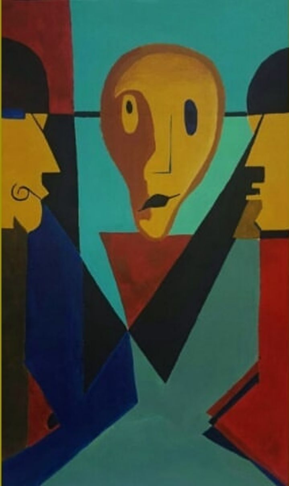
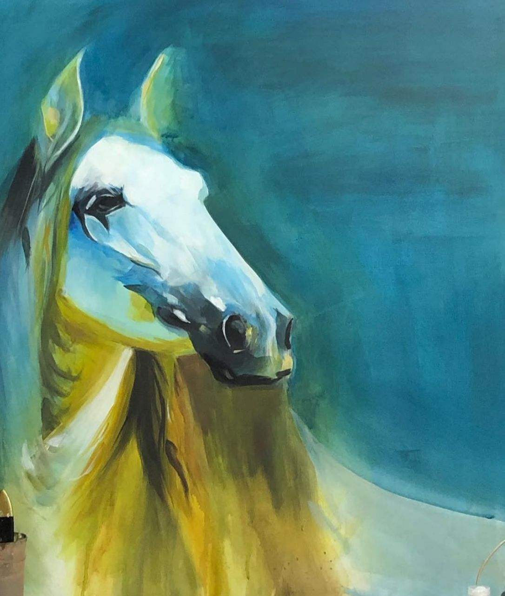
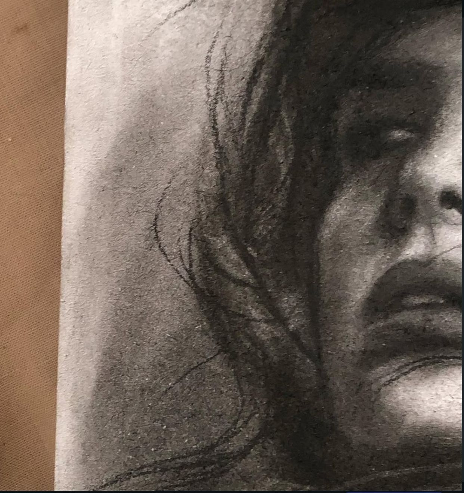
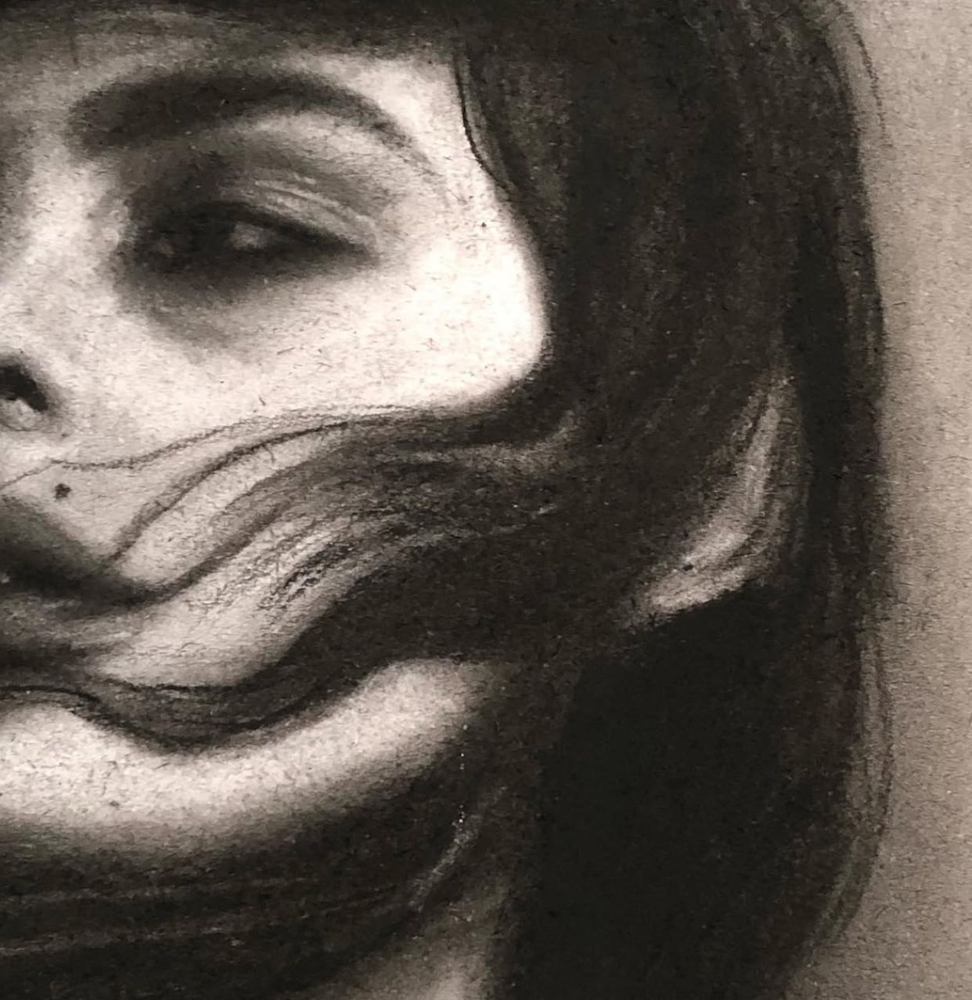
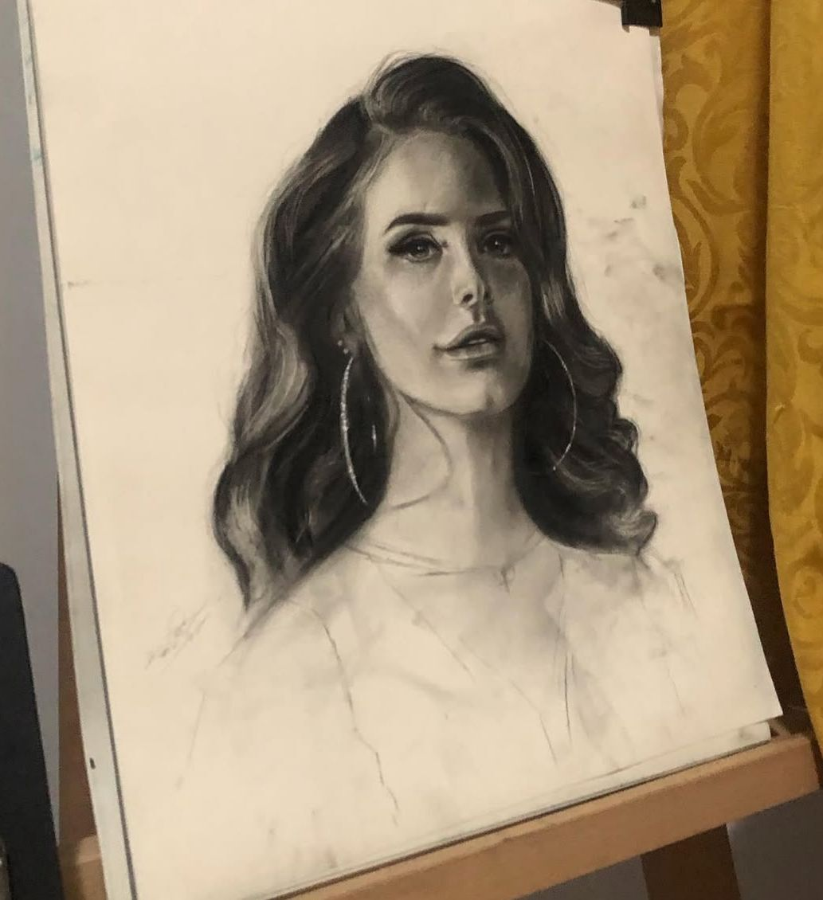
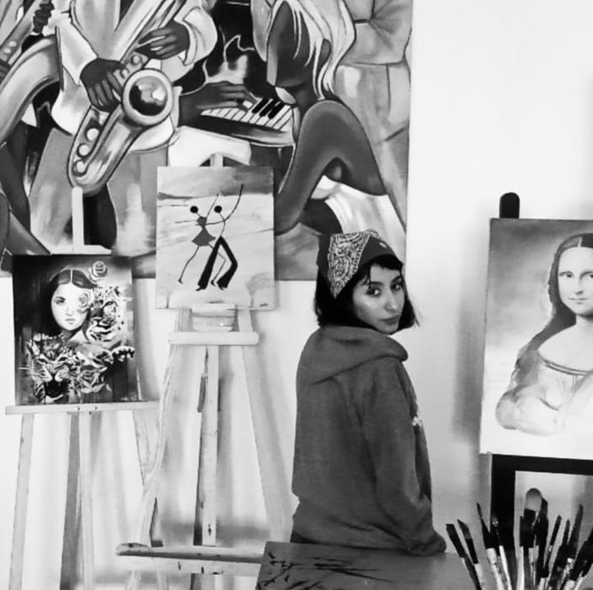
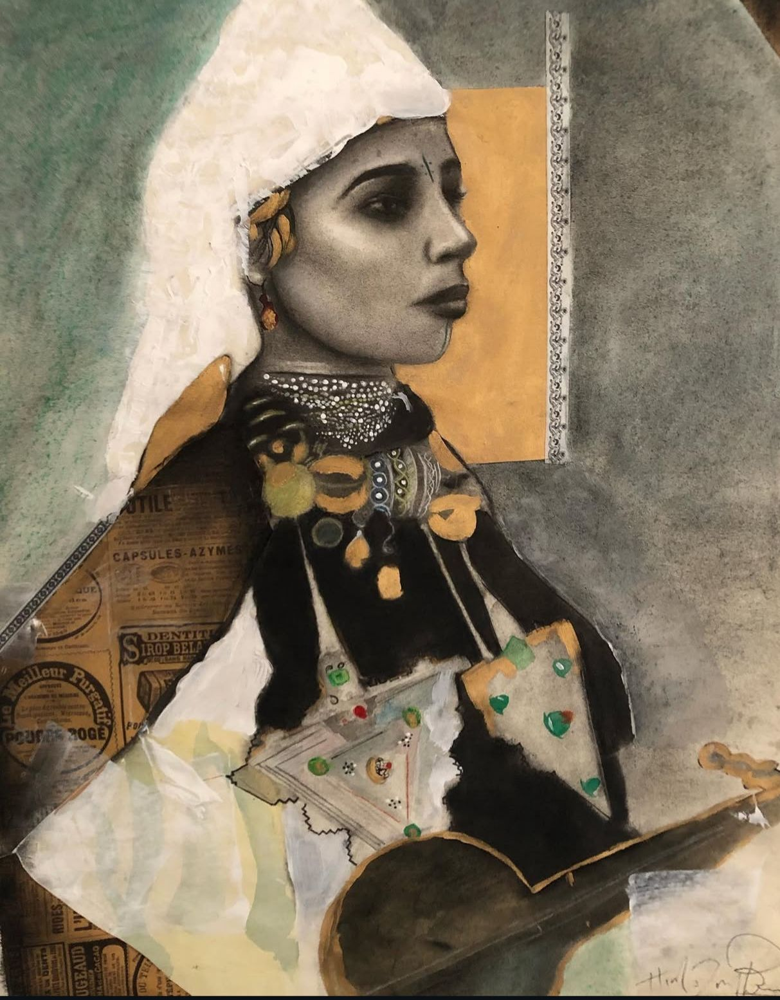
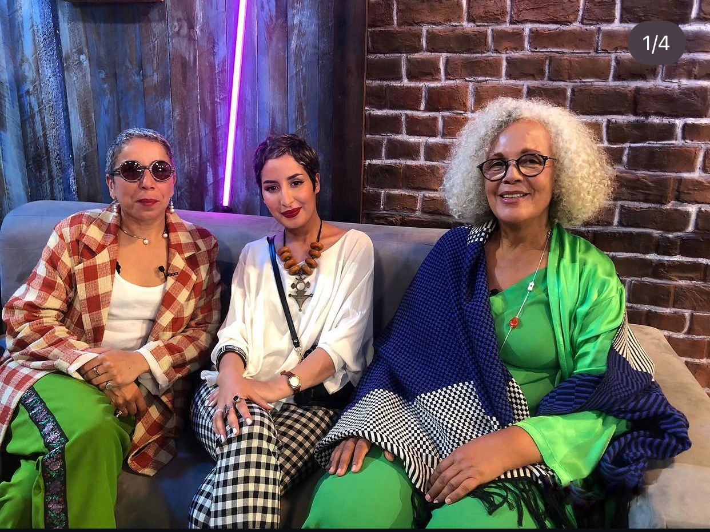
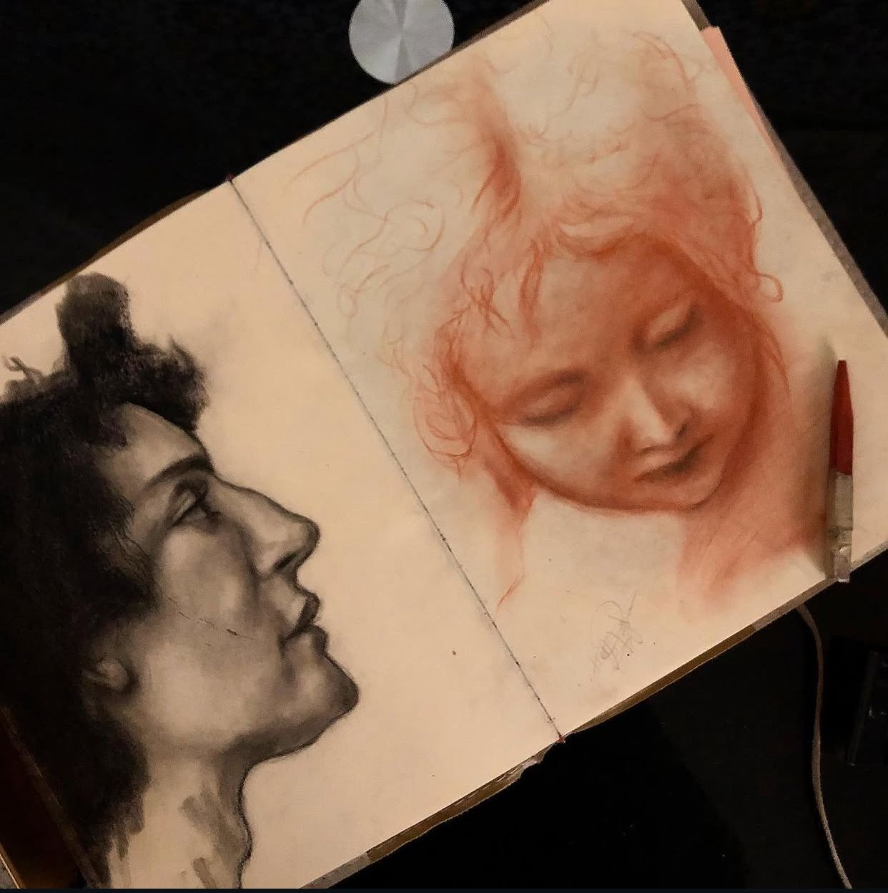

About the Artist
Hind Izouaghen is a 31-year-old painter based in Agadir, Morocco. Coming from a family deeply rooted in the arts, creativity has always been part of her environment — her father is a music teacher, her sister a recognized pianist, and her brother a guitarist and bassist. This artistic foundation shaped her sensitivity to expression, rhythm, and emotion from an early age.
Entirely self-taught, Hind has reached an academic level in her work through discipline, observation, and continuous practice. Her journey outside traditional art schools gives her a unique position: technically refined, yet creatively free from rigid frameworks.
Artistic Vision
• Women empowerment
• Amazigh identity
• Facial expression and detail
She portrays women as strong, introspective figures, emphasizing depth, resilience, and silent narratives. Her work reflects Amazigh identity as something living and evolving.
Style & Influence
• Medium: Painting (canvas)
• Style: Contemporary figurative
• Focus: Facial detail & emotional realism
Inspired by Leonardo da Vinci and influenced by Cesar Santos, John Fenerov, and Casey Baugh.
Artistic Approach
Hind approaches each painting as a study of emotion and identity, often starting with the face and building the composition organically.
Gallery



















Exhibitions & Appearances
• National exhibition in Agadir
• TALWEEKEND (3 participations)
• Exhibition in Taghazout
• 2M TV – Dream Artist
• Tamazight TV – timert n tzuri
Artist Statement
“My work is a tribute to women, identity, and heritage. Through faces, I reveal strength, memory, and belonging.”
Contact & Collaboration
• Location: Agadir, Morocco
• Email: Hizouaghen@gmail.com
• Phone: +212675131092